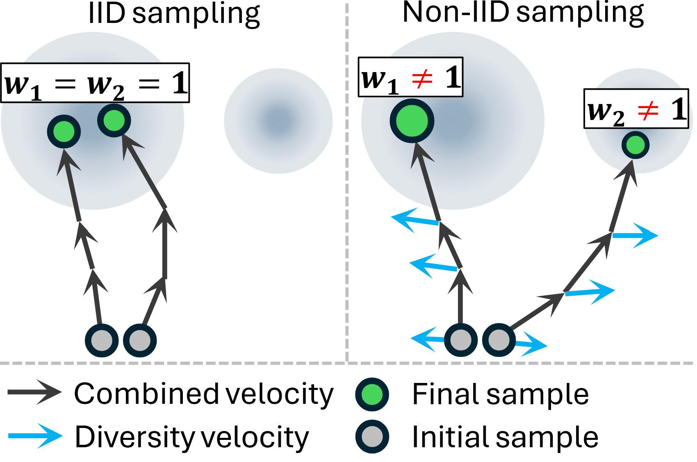
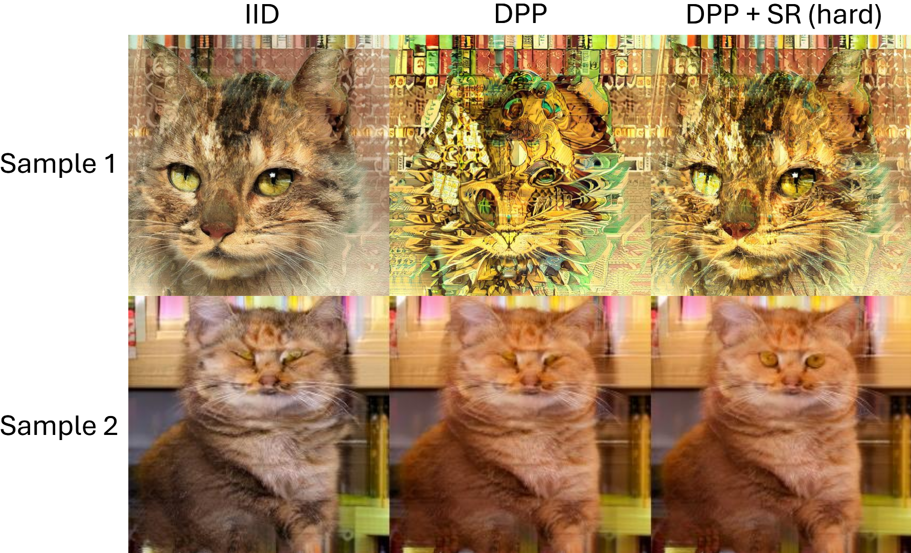
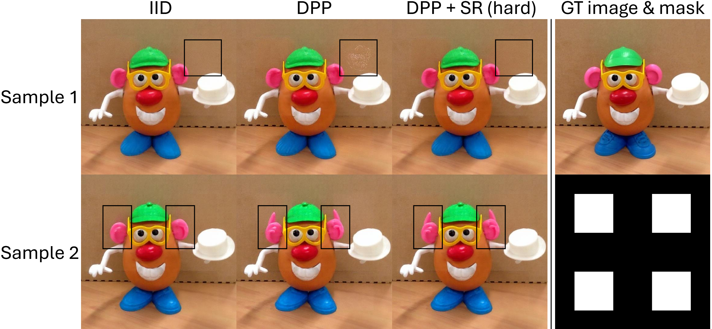

Abstract
Flow matching models effectively represent complex distributions, yet estimating expectations of functions of their outputs remains challenging under limited sampling budgets. Independent sampling often yields high-variance estimates, especially when rare but high-impact outcomes dominate the expectation. We propose a non-IID sampling framework that jointly draws multiple samples to cover diverse, salient regions of a flow matching model's generative distribution. To balance diversity and quality, we introduce a score-based regularization for the diversity mechanism (SR), which uses the score function, i.e., the gradient of the log probability, to ensure samples are pushed apart within high-density regions of the data manifold, mitigating off-manifold drift. To enable unbiased estimation when desired, we further develop an approach for importance weighting of non-IID flow samples by learning a residual velocity field that reproduces the marginal distribution of the non-IID samples and by evolving importance weights along trajectories. Empirically, our method produces diverse, high-quality samples and accurate estimates of both importance weights and expectations, advancing the reliable characterization of flow matching model outputs. Our code will be publicly available on GitHub.
Method
Our approach addresses both (G1) diversity with quality and (G2) unbiasedness by modifying the sampling of a pre-trained flow. We generate a batch of $n$ samples jointly, $X^{(1:n)} = (X^{(1)}, \dots, X^{(n)})$, from velocity $v(x,t)$ with base distribution $p_0(x)$. We encourage diversity while preserving on-manifold quality and assign an importance weight to each sample so that the expectation estimator remains unbiased. We achieve this with two components: (1) score-based diversity velocity regularization that pushes samples apart primarily along high-density directions, and (2) a residual velocity for importance weighting added to $v$ to model each sample's marginal distribution under the joint sampler.
Qualitative Results


- © Xinshuang Liu